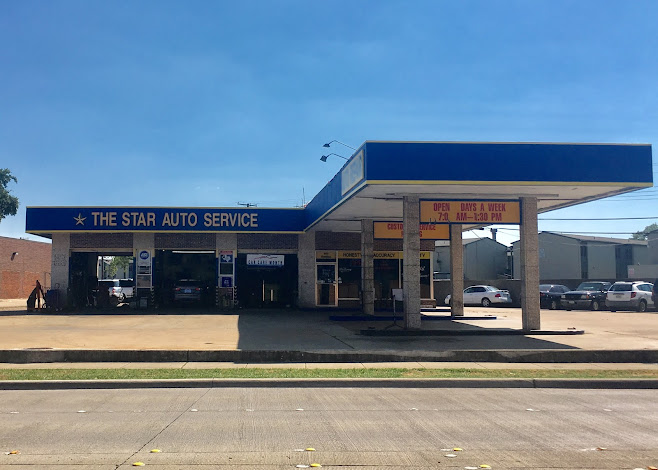
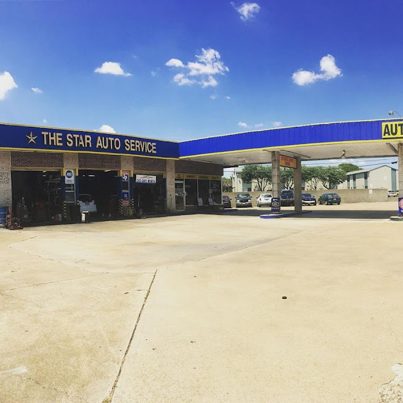
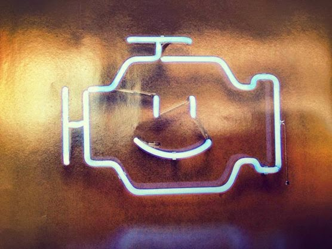
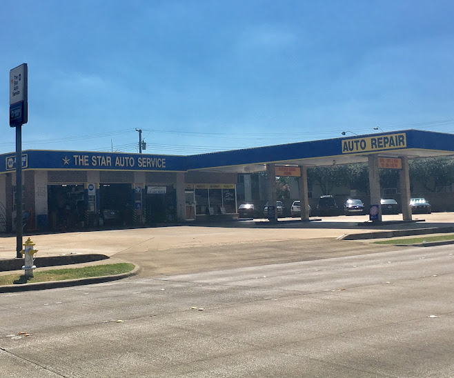

01
Diagnóstico honesto
Te decimos qué necesita realmente tu auto, qué puede esperar y qué no vale la pena reparar. La cuota de diagnóstico se descuenta de la reparación, así que cuando lo encontramos, pagas una sola vez.


Mecánicos certificados ASE en Richardson, TX. Centro NAPA Auto Care, servicio bilingüe en inglés y español. 28 años de respuestas claras, precios justos y trabajo de calidad en cada marca y modelo.
28
Años en Richardson
Desde 1998
4.5
Calificación promedio
136 reseñas en Google
ASE
Técnicos certificados
El estándar de la industria
Centro oficial NAPA Auto Care
Garantía 24 meses / 24,000 millas · más de 17,000 talleres a nivel nacional
Por qué los conductores nos eligen
Te decimos qué necesita realmente tu auto, qué puede esperar y qué no vale la pena reparar. La cuota de diagnóstico se descuenta de la reparación, así que cuando lo encontramos, pagas una sola vez.
Técnicos certificados ASE, refacciones nivel NAPA u OEM y garantía nacional de 24 meses / 24,000 millas en reparaciones que califican. Una sola vez, bien hecho.
Inglés o español, como tú prefieras. La misma familia en la esquina de Belt Line desde 1998. Tu reparación, explicada en tu idioma.
En lo que trabajamos
Doce categorías de servicio, todas las marcas y modelos comunes, nacionales e importados. Si está en tu tablero o debajo del cofre, ya lo hemos visto y sabemos qué hacer.


Est.
1998
El taller
Miguel Ibarra abrió The Star Auto Service en 1998 con una sola regla: nunca recomendar una reparación que el auto no necesite. Esa regla ha sobrevivido a cada atajo, a cada cadena que abrió calle abajo y a cada pretexto fácil para cortar camino.
Lo que empezó como una bahía familiar pequeña sobre Belt Line Road creció hasta convertirse en uno de los talleres más confiables de Richardson. Técnicos certificados ASE. Garantía nacional NAPA Auto Care. Servicio en inglés o español, como tú prefieras.
Y la respuesta a “¿de verdad necesito esto?” siempre se da directo.
En Belt Line, en Richardson
E Belt Line Road cruza Richardson de oriente a poniente, y nosotros llevamos en la misma esquina desde el 98. Frente a Coin Laundry, entre Plano Road y Jupiter. Fácil entrar, fácil salir.

Fachada · 900 E Belt Line Rd
Misma esquina. Misma familia. Veintiocho años.
Dónde estamos · El mapa

El vecindario
Familias de Richardson desde el 98

Un punto fijo en Belt Line
Conductores de Richardson. Segundas opiniones de Plano. Camiones de flota de Garland. Carpools de Allen.
Veintiocho años en la esquina significan muchos autos y muchos conductores, y la mayoría regresaron.
De la gente que sigue regresando
4.5
Calificación promedio
En cientos de reseñas de conductores de Richardson
“Quickly diagnosed and repaired my vehicle for a very reasonable price. They aired my tires up without me asking. That may not be a big deal to some, but it meant a lot to me and demonstrated their concern for details.”
Robert M.
2015 Honda Civic
“This company has helped maintain my two different cars for 6 years. I have found the work completed at Star Auto to be of the highest quality at a reasonable cost.”
Patricia L.
2013 Chrysler Town & Country
“The guys are the best in town. You can count on them when it comes to honesty, quality, expertise, and timely service. Better than the dealerships.”
James W.
2013 RAM 1500
“I really enjoy doing business with The Star Auto Service. Service was done promptly and well. I appreciate them for the employees, quality work, and fair prices.”
Linda K.
2010 Nissan Altima
“Star Auto service is fantastic. Great job. Very prompt and courteous.”
Michael T.
2016 Chevrolet Traverse
“Service was quick and everything was replaced as needed.”
Sarah D.
2017 Chevrolet Silverado
Donde atendemos
Conductores de todo el norte de Dallas confían en nosotros, además de cada vecindario de Richardson, desde Canyon Creek hasta Sherrill Park.
Ciudades atendidas
Richardson, TX
En Belt Line, en Richardson
Garland, TX
Cerca de 8 a 12 minutos
Plano, TX
Cerca de 10 a 15 minutos
Dallas, TX
Cerca de 15 a 25 minutos
Allen, TX
Cerca de 20 minutos
Murphy, TX
Cerca de 12 minutos
Wylie, TX
Cerca de 18 a 22 minutos
Sachse, TX
Cerca de 12 a 15 minutos
Lake Highlands, TX
Cerca de 15 a 18 minutos
Vecindarios de Richardson
Preguntas frecuentes
Las preguntas que más nos hacen los conductores de Richardson, con las mismas respuestas directas que damos por teléfono.
Sí. Somos una estación autorizada para inspecciones del estado. Aceptamos clientes sin cita lunes a viernes de 8:00 AM a 6:30 PM y sábados de 8:00 AM a 4:00 PM.
La mayoría de los trabajos de frenos los hacemos el mismo día, siempre que las refacciones estén en stock. Llámanos con el año, marca y modelo de tu vehículo y te confirmamos antes de que vengas.
Sí. Como Centro NAPA Auto Care, nuestro trabajo está respaldado por la garantía nacional de tranquilidad de 24 meses / 24,000 millas, válida en más de 17,000 Centros NAPA Auto Care en todo el país.
Sí. Estamos sobre E Belt Line Road en Richardson y atendemos regularmente a conductores de Garland, Plano, Allen, Murphy y todo el norte de Dallas.
Sí. Nuestros técnicos certificados ASE dan servicio a vehículos híbridos junto a los de gasolina convencional, tanto nacionales como importados.
Trabajamos con evaluaciones honestas y cotizaciones claras desde el principio. Llámanos, cuéntanos qué está pasando y platicamos lo que probablemente cuesta antes de que se mueva una sola herramienta.
Visita el taller
Dirección
900 E Belt Line Rd
Richardson, TX 75081
Cómo llegarLlama al taller
(972) 231-2886Horario
Agenda en línea, llámanos o pasa por el taller. Aceptamos clientes sin cita y el café está listo. Te recibimos, te damos una respuesta directa y te ponemos de nuevo en la carretera.